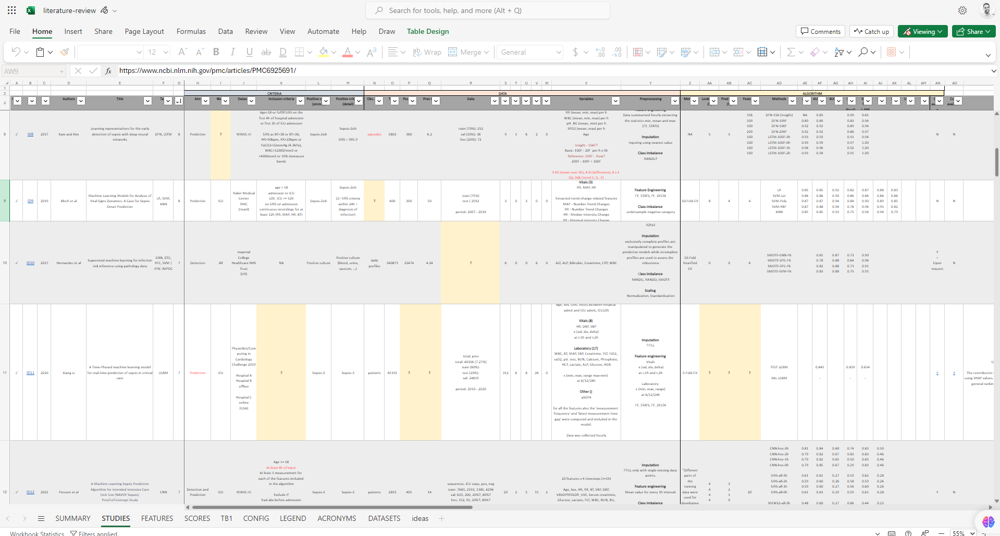
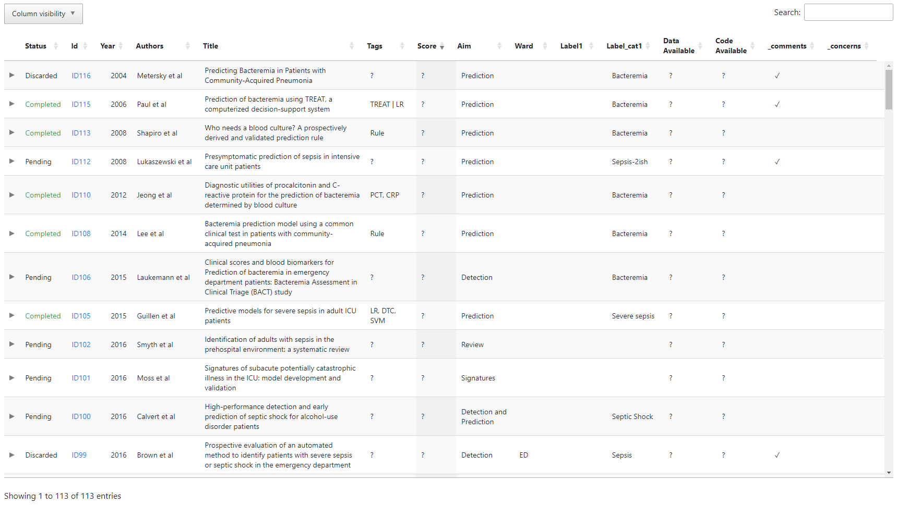

Advances in diagnosis and prognosis of bacteremia, bloodstream infection and sepsis using machine learning: A live review
- Centre for Antimicrobial Optimisation, Imperial College London, London, UK
- Healthcare Protection Research Unit in Healthcare Associated Infections, Imperial College London, London, UK
- AI4Health Centre for Doctoral Training, Imperial College London, London, UK
- Imperial College Healthcare NHS Trust, London, UK
- Centre for Bio-inspired Technology, Imperial College London, London, UK
- Imperial College Healthcare NHS Trust, Praed Street, W2 1NY, UK
- Department of Global Health and Infectious Diseases, University of Liverpool, UK

Explore the original Microsoft Excel file online. In order to see and access this file, you will need to log in into your Microsoft Office account.

Explore a simplified version of the Microsoft Excel spreadsheet online. The HTML page has been generated using DataTables.
![Thumbnail [100%x225]](data:image/svg+xml;charset=UTF-8,%3Csvg%20width%3D%22348%22%20height%3D%22225%22%20xmlns%3D%22http%3A%2F%2Fwww.w3.org%2F2000%2Fsvg%22%20viewBox%3D%220%200%20348%20225%22%20preserveAspectRatio%3D%22none%22%3E%3Cdefs%3E%3Cstyle%20type%3D%22text%2Fcss%22%3E%23holder_18ec90dec1d%20text%20%7B%20fill%3A%23eceeef%3Bfont-weight%3Abold%3Bfont-family%3AArial%2C%20Helvetica%2C%20Open%20Sans%2C%20sans-serif%2C%20monospace%3Bfont-size%3A17pt%20%7D%20%3C%2Fstyle%3E%3C%2Fdefs%3E%3Cg%20id%3D%22holder_18ec90dec1d%22%3E%3Crect%20width%3D%22348%22%20height%3D%22225%22%20fill%3D%22%2355595c%22%3E%3C%2Frect%3E%3Cg%3E%3Ctext%20x%3D%22116.71875%22%20y%3D%22120.3%22%3EThumbnail%3C%2Ftext%3E%3C%2Fg%3E%3C%2Fg%3E%3C%2Fsvg%3E)
Explore additional information and aggregated statistics computed from the raw data. This section has not been implemented yet.